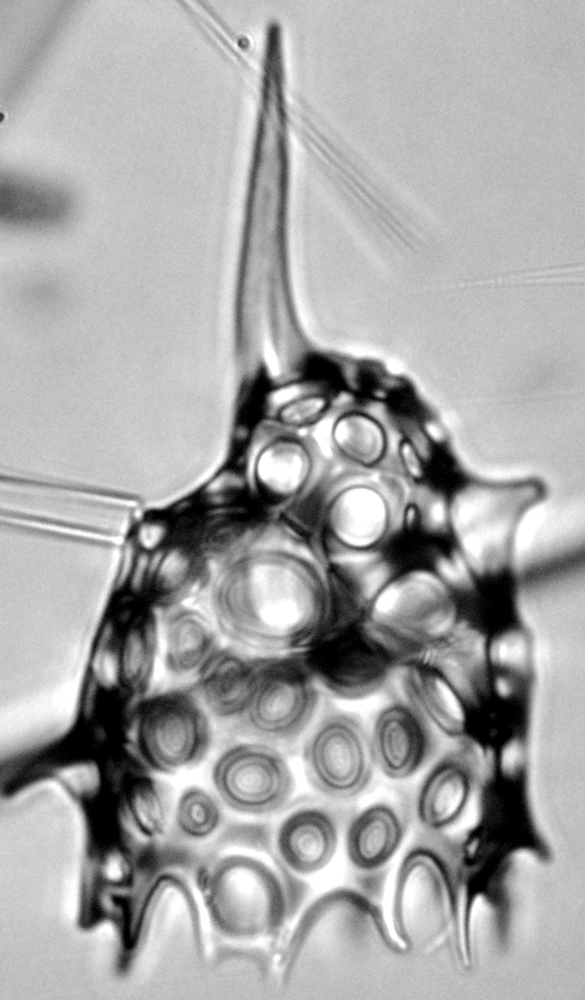

In it, webut mostly she not only described 58 new forms, named 23 of them and revised/commented on 32 previously-described species of those little buggers, we also named and described a new genus, Pelagomanes (the "ghost from the sea", to keep with Sarah's ghost-themed naming scheme for this paper).
 |
 |
From left to right, Pelagomanes cantharoides (Sugiyama 1992), P. kozoi (Renaudie & Lazarus 2013) and P. stigi (Bjørklund 1976); three previously-described species for which we established this new genus.
It will never cease to amaze me that this poorly-documented group is not only so diverse in most of the Neogene but also so abundant!
Reference:
Trubovitz S., Renaudie J., Lazarus D.B., Noble P. (2022) Late Neogene Lophophaenidae (Nassellaria, Radiolaria) from the Eastern Equatorial Pacific. Zootaxa 5160(1), 1-158.